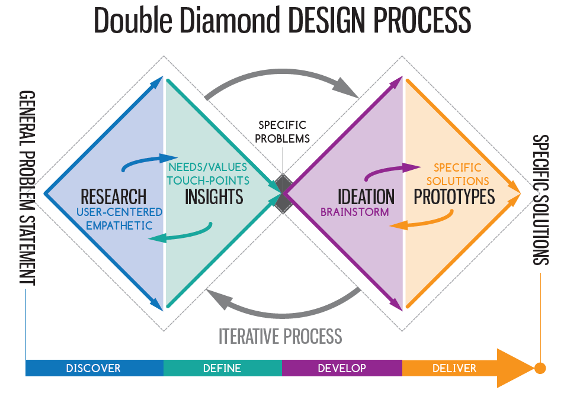

Approach, implementation and results
In the first week of my internship, we wrote the project plan as we decided to work with Double diamond method we came up with the planning and approach, we also came to an agreement regarding communication. Within the planning there are few phases and sprints. If you would like to see the planning, I would recommend reading the “Project plan”.

In the next 4 week of my internship we focused on orienting, in this phase we research and gathered more information regarding our project. As a result, we had a better understand of the assignment. After this we began with the first phase researching.
First we wanted to know about the current system, therefore we held an flied research.
We wanted to gather answer on “What are the wishes and need of our target group, so that we know which parts of the process should be simplified?” First, we needed to know more about our target audience. Therefore, we did flied research and held an interview with the people uses the app. This gave us a better view about our target audience.
Next, we did flied research, and did a Participant observation / interview with the users. We did this as we wanted to know their wishes and needs, after all we found out there were a lot of bugs and improvement points on the current system which made the app feel like a BETA version.
We made a persona as we wanted to create our ideal target audience. We did this because we can combine important things from multiple users and implement this to one user.
In addition, we made empathy map to combine our research insights and to get a clear overview about what our target audience wants, says, like, dislikes and more.
We even did field research, to be exact a Survey to know what the abilities are of us
target group, regarding technology. So that we can take it into account with the UI. We didn’t have any good insights, because I didn’t setup a good question and didn’t knew how to analyze the answer.
After the research phase, we moved on to the define phase. In this phase we analysed our findings from the research phase and defined our problem which was “There is a lot of small problems, all these small problems combined created a bad user experience”. We came up with solutions to make a new native app in Flutter. We chose for a native app because it has better hardware support then a PWA, the reason we wanted to program with Flutter is because then the app is compatible with IOS and Android. Furthermore, we wanted to create an app with excellent user experience, to achieve this we did literature research on design principles (Design document). We compared different design principles and chose the one that fits the best for our project. Next, we defined what tools and methods we are going to use, to succeed this project.
After define phase we started with the design phase, we worked on this for 2 weeks. Therefore, we started to gather some inspirations, we looked at buttons, steppers and cool designs that would fit out project. We decided to ask the user which button and stepper they think its user friendly. Therefore, we did field research and used a survey (design document) to get answers. As a result, we 50% from the 10 users choose for stepper 1 and for the button 70% choose for the Neomorphism button.
Next, we started to create a wireframe, we chose for a simple wireframe because we wanted to create a minimum viable product. This was done very fast; with this we got a view of how the app could look like.
After this, we create a design which was more detailed version 1. This version had few changes in the home page and the menu bar. Also, we create a visual hierarchy that matches the user’s needs with the use of our color, contrast and highlighted the important things.
Meanwhile, we have taken the design principles into account when making the design. For example, we have ensured that there is little distraction for the user, so that he/she can complete their tasks without being disturbed.
After talking to our target audience and the product owner we got some few feedback on the design, to meet their wishes, we created a new design. This version 2 is high quality prototype, we implemented the morphism button design, and choses for a rounded stepper. This gave a more professional look.
Version 2.1 was created, where we found our users didn’t knew the scrollable part. Furthermore, orange was not the same as the Brover’s orange. We managed to change the color.
We did a user test to find out if this design was user friendly, we did this trough Maze. The result was very positive, almost everybody can navigate through the app. There were few prototype errors. Next time we must make a better prototype with no errors.
In the Design document we documented this phase in more detail with images. We also have a substantiation of how we have used the design principles, we used the design principle to improve the user friendliness.
After the design phase, we started the develop phase, we chose to use the current Git environment which was already used for the current app. We chose to do this because the current app has few components which we can reuse.
We started to learn flutter, since we didn’t have a lot of knowledge. We started to learn the basics and the layout structure. Soon we found out about widgets and classes and that it was built like a tree of widgets. We then made the front-end of the home page.
Next, we needed to make a stepper, our internship supervisor told us to make a custom stepper. This was because the material stepper was not nice to work with and after all making a custom stepper would help a lot with gaining knowledge about programming. We had to learn about state management. I spent a very long time in this part of programming as I found it quite difficult.
This stepper is the core navigator throughout the app, each step is loaded by changing steps. After the stepper was successful build. We started with developing step 1 entering VIN (Vehicle identification number), this went easy, we reused the scanner widget from the old version. Next, we made step 2, here we wanted the VIN to be visible on each step. We couldn’t do this because each step made a new route. To solve this, we did some research on the web and found out about MVVM (model view, view model). With this we managed to send information from view to view-model and able to show the VIN on each step.
Foreach steps made different components, as result we could reuse a component. Step 4 was a bit difficult and was a struggle as we wanted to take pictures and show the images in a list view. Therefore, we had to work with list of XFiles.
We also wrote a develop document, please read this document for more information about developement.
We did not manage to finish the app, there are still few important things to do to improve the user experience. In step 3 the control step, the buttons need to be default on “no” and there need to be a scroll bar so users know they can scroll on this part. Furthermore, we wanted to filter the VIN and automatic fill the car brand and type, this prevents mistakes by the user and speeds up the process.
The vehicle check part still needs to be developed but this won’t take long as we can reuse the code on intake. The check part is built in 2 steps scan or type the VIN part and image part, where user can take picture of the vehicle.